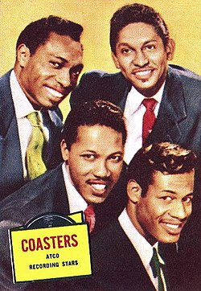

The Coasters est un groupe de musique rock'n roll américain qui a joué entre les années 1950 et les années 1990. Ils étaient également surnommés "The Clown Princes of Rock'n'roll".
Le groupe est formé en 1956. Ils gagnent leur premier disque d'or en 1957 avec "Searchin'". Ils enchaînent rapidement les tubes avec "Yakety Yak" (1958) et "Charlie Brown" (1959).
Puis, le groupe pars pour New-York. Ils sortent alors la chanson "Along came Jones" (1959) qui sera adaptée en français par Bernard Michel et interprétée dans cette langue par Henri Salvador, donnant "Zorro est arrivé". Cette même chanson sera en 1964 un succès en France.
Une chanson connue interprétée par le groupe est "Sh boom life could be a dream". Cette version, bien qu'elle ne soit pas l'originale, est devenue un phénomène et apparaît même dans le film "Cars" des studios Pixar.
Notre quizz